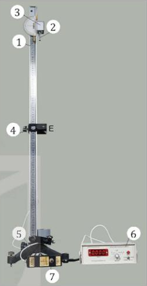
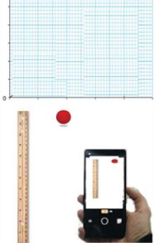

? Kiểm tra bài cũ
Công thức tính quãng đường đi của chuyển động rơi tự do? \(s\) và \(t^2\) có quan hệ gì?
Công thức tính quãng đường đi của chuyển động rơi tự do:
Trong đó:
- \(s\) là quãng đường vật rơi được (m).
- \(t\) là thời gian rơi (s).
- \(g\) là gia tốc rơi tự do (\(\mathrm{m/s^2}\)).
Nhận xét: Từ công thức ta thấy \(s\) tỉ lệ thuận với bình phương thời gian rơi \(t^2\).
Bài 11: THỰC HÀNH: ĐO GIA TỐC RƠI TỰ DO
Sử dụng đồng hồ đo thời gian hiện số và cổng quang điện
Các vật rơi tự do chuyển động rất nhanh, làm thế nào đo được gia tốc rơi tự do của vật?
I. DỤNG CỤ THÍ NGHIỆM
- Máng đứng, có gắn dây dọi (1).
- Vật bằng thép hình trụ (2).
- Nam châm điện N (3), dùng giữ và thả trụ thép.
- Cổng quang điện E (4).
- Giá đỡ có để ba chân, có vít chỉnh cân bằng và trụ thép (5).
- Đồng hồ đo thời gian hiện số (6).
- Công tắc kép (7).

Hình 11.1. Bộ dụng cụ thí nghiệm đo gia tốc rơi tự do.
II. THIẾT KẾ PHƯƠNG ÁN THÍ NGHIỆM
Thảo luận về phương án thí nghiệm dựa trên hoạt động sau: Thả trụ thép rơi qua cổng quang điện trên máng đứng và trả lời câu hỏi.
Câu 1. Xác định gia tốc rơi tự do của trụ thép theo công thức nào?
Từ công thức quãng đường của chuyển động rơi tự do $s = \frac{1}{2}gt^2$, ta suy ra công thức tính gia tốc rơi tự do:
Câu 2. Để xác định gia tốc rơi tự do của trụ thép cần đo các đại lượng nào?
Cần đo 2 đại lượng:
- Quãng đường \(s\): khoảng cách từ vị trí thả trụ thép (nam châm điện) đến cổng quang điện.
- Thời gian \(t\): thời gian trụ thép rơi từ lúc thả đến khi đi qua cổng quang điện.
Câu 3. Làm thế nào để trụ thép rơi qua cổng quang điện?
Đặt trụ thép tại vị trí tiếp xúc với nam châm điện để nam châm giữ trụ thép lại. Khi nhấn nút công tắc kép để ngắt điện vào nam châm điện, trụ thép sẽ mất từ tính và rơi tự do xuống dưới, đi qua cổng quang điện.
Câu 4. Cần đặt chế độ đo của đồng hồ ở vị trí nào để đo được đại lượng cần đo?
Cần đặt chế độ đo của đồng hồ ở vị trí đo thời gian (chế độ đo thời gian vật chắn cổng quang điện).
III. TIẾN HÀNH THÍ NGHIỆM
- Cắm nam châm điện vào ô A và cổng quang vào ô B ở mặt sau của đồng hồ đo thời gian hiện số.
- Đặt MODE đồng hồ đo thời gian hiện số ở chế độ thích hợp.
- Đặt trụ thép tại vị trí tiếp xúc với nam châm điện N và bị giữ lại ở đó.
- Nhấn nút RESET của đồng hồ MC964 để chuyển các số hiển thị về giá trị ban đầu 0.000.
- Nhấn nút của hộp công tắc kép để ngắt điện vào nam châm điện: Trụ thép rơi xuống và chuyển động đi qua cổng quang điện.
- Ghi lại các giá trị thời gian hiển thị trên đồng hồ vào mẫu Bảng 11.1.
- Dịch chuyển cổng quang điện ra xa dần nam châm điện, thực hiện lại các thao tác 3, 4, 5, 6 bốn lần nữa. Ghi các giá trị thời gian \(t\) tương ứng với quãng đường \(s\) vào mẫu Bảng 11.1 trong báo cáo thực hành.
Để thả rơi trụ thép theo máng đứng có thể thực hiện như sau:
- Đặt máng đứng lên giá đỡ. Vặn chặt vít hãm.
- Nối công tắc điện với nam châm điện và nối công tắc vào ô cắm A, nối cổng quang điện ở cắm B ở mặt sau của đồng hồ đo thời gian.
- Cắm nguồn điện của đồng hồ và bật công tắc nguồn. Đặt trụ thép tại vị trí tiếp xúc với nam châm điện N và bị giữ lại ở đó.
- Nhấn nút của hộp công tắc kép để ngắt điện vào nam châm điện.
IV. KẾT QUẢ THÍ NGHIỆM
Bảng 11.1
| Quãng đường | Lần đo thời gian | ||||
|---|---|---|---|---|---|
| Lần 1 | Lần 2 | Lần 3 | Lần 4 | Lần 5 | |
| \(s_1\) | ? | ? | ? | ? | ? |
| \(s_2\) | ? | ? | ? | ? | ? |
| \(s_3\) | ? | ? | ? | ? | ? |
| \(s_4\) | ? | ? | ? | ? | ? |
| \(s_5\) | ? | ? | ? | ? | ? |
Nhận xét và đánh giá kết quả thí nghiệm
Câu 1. Hãy tính giá trị trung bình và sai số tuyệt đối của phép đo gia tốc rơi tự do.
Tính giá trị trung bình của gia tốc rơi tự do:
Sai số tuyệt đối của phép đo:
Sai số tuyệt đối trung bình:
Câu 2. Tại sao lại dùng trụ thép làm vật rơi trong thí nghiệm? Có thể dùng viên bi thép được không? Giải thích tại sao.
Dùng trụ thép vì nam châm điện có thể giữ và thả trụ thép một cách dễ dàng, đồng thời trụ thép có hình dạng thuôn dài, khi rơi qua cổng quang điện sẽ che chắn được chùm tia hồng ngoại trong thời gian đủ lớn để đồng hồ ghi nhận chính xác.
Không nên dùng viên bi thép vì viên bi có kích thước nhỏ, khi rơi qua cổng quang điện có thể chỉ che một phần chùm tia hoặc thời gian che chắn quá ngắn, dẫn đến sai số lớn.
Câu 3. Vẽ đồ thị mô tả mối quan hệ \(s\) và \(t^2\) trên hệ toạ độ \((s - t^2)\).
Vẽ hệ trục tọa độ với trục hoành là \(t^2\) (đơn vị s²), trục tung là \(s\) (đơn vị m). Đánh dấu các điểm \((t_i^2, s_i)\).
Câu 4. Nhận xét chung về dạng của đồ thị mô tả mối quan hệ \(s\) và \(t^2\) rồi rút ra kết luận về tính chất của chuyển động rơi tự do.
Đồ thị là một đường thẳng đi qua gốc tọa độ. Điều này chứng tỏ \(s\) tỉ lệ thuận với \(t^2\), tức là \(s \sim t^2\). Từ đó rút ra kết luận: Chuyển động rơi tự do là chuyển động thẳng nhanh dần đều.
Câu 5. Hãy đề xuất một phương án thí nghiệm khác để đo gia tốc rơi tự do của trụ thép.
Có thể sử dụng camera của điện thoại thông minh và phần mềm phân tích video để xác định gia tốc rơi tự do (như mục "Em có thể"). Hoặc dùng một con lắc đơn có chiều dài \(l\), đo chu kì \(T\), tính \(g\) theo công thức \(T = 2\pi\sqrt{\frac{l}{g}}\).
☆ Tổng kết
- Rơi tự do là chuyển động thẳng, nhanh dần đều nên có thể xác định gia tốc rơi tự do theo công thức xác định gia tốc của chuyển động nhanh dần đều.
- Sử dụng đồng hồ đo thời gian hiện số và cổng quang đo gia tốc rơi tự do của viên bi thép hoặc trụ thép.
Vào năm 1602, Galilei phát hiện ra chuyển động của con lắc và khoảng thời gian một chu kì tỉ lệ với căn bậc hai chiều dài con lắc. Nhờ phát hiện này có thể đo gia tốc rơi tự do bằng con lắc đơn.
▤ Bài tập về nhà
Sử dụng camera của điện thoại thông minh và phần mềm phân tích video để xác định được gia tốc rơi tự do của vật (Hình 11.2).

Hình 11.2. Bố trí đo gia tốc rơi tự do bằng camera của điện thoại thông minh.